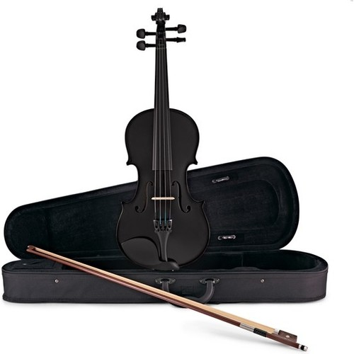
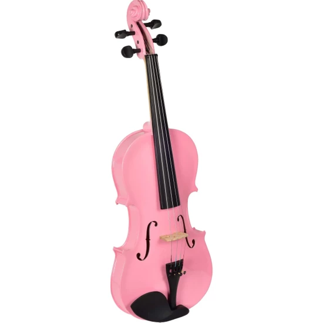
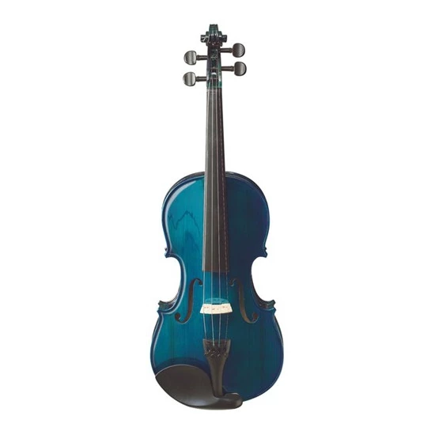
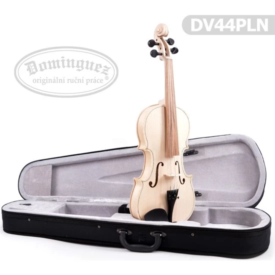
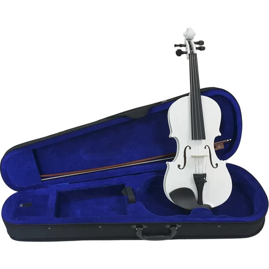
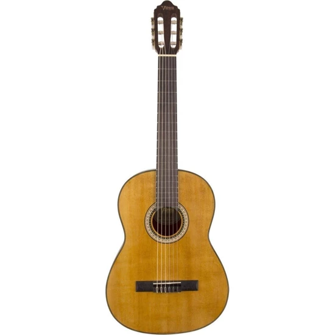
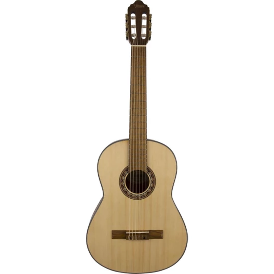
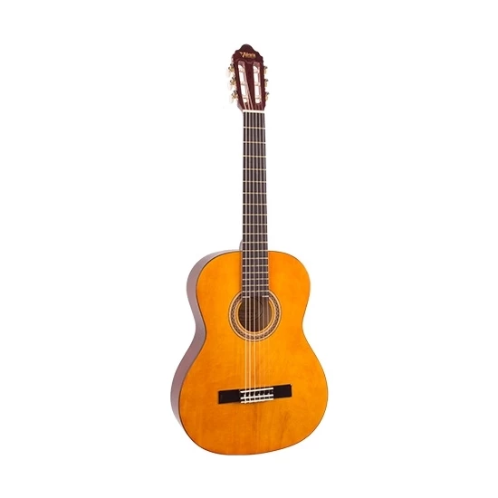
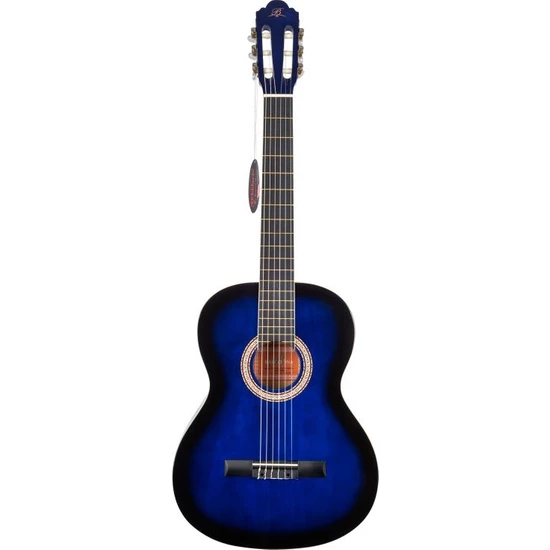

Barcelona LC 3900BK Klasik Gitar (Kılıf+Pena)
Barcelona gitar modelleri, her yaştan ve her seviyeden kullanıcının kullanımı için gayet uygundur. Satın almak için tıkla.

İdol Keman 4/4 Siyah Tam Set Kalite Keman
Barcelona LC 3900BK Klasik Gitar (Kılıf+Pena) Barcelona gitar modelleri, her yaştan ve her seviyeden kullanıcının kullanımı için gayet uygundur. Taşıma kutusu Reçine ve Arşe HEDİYE Tüm konservatuarlar ve müzik öğretmenleri tavsiye eder.

Valler Vk210P 4/4 Keman Pembe
Valler Vk210P 4/4 Keman Pembe
Valler VK210P 4/4 Keman Pembe
Pleymut keman 4/4
Ön panel:Pleymut
Yanlar ve arka panel:Pleymut
Hardwood Parçalar
Renk: Pembe
Standart Çanta
Taşıma kutusu Reçine ve Arşe HEDİYE

Ashton AV142BBS Keman (1/4)
Ashton AV142BBS Keman (1/4)
Boyut: 47 x 16.5cm, bu keman kemana yeni başlayan 5-7 yaş arası çocuklar için uygundur. Kemanın kutusu ve yayı keman ile aynı renkte gönderilmektedir. Fiyatlara Keman kutusu+ Keman Yayı+ Reçine dahildir.

Dominguez 4/4 Gül Keman - DVR44CRG
Dominguez 4/4 Gül Keman - DVR44CRG
Bu keman %100 hakiki ağaçlar kullanılarak imal edilmiştir. Tüm konservatuarlar ve müzik öğretmenleri tarafından tavsiye edilir. fabrikasyon değildir.
Önkapak: Ladin
Yanlar: Kelebek Ağacı
Sap ve Eşik: Kelebek Ağacı

Cremonıa Keman Beyaz Scale 4/4 Hardwood Kumaş Sert Kutulu
Cremonıa Keman Beyaz Scale 4/4 Hardwood Kumaş Sert Kutul
Keman 4/4 Kumaş Sert Kutulu+Yay+Reçine Beyaz

Valencia VC404 Klasik Gitar (Kılıf Hediyeli)
Valencia VC404 Klasik Gitar (Kılıf Hediyeli)
Özel seçim Sitka Spruce ağacından Ön Kapak ve Nato ağacından Yanlar ile Arka Kapak, Maun Sap ve ona bağlıdır.

Valencia Vc304 Klasik Gitar (Kılıf Hediyeli)
Valencia Vc304 Klasik Gitar (Kılıf Hediyeli)
Özel seçim Sitka Spruce ağacından Ön Kapak ve Nato ağacından Yanlar ile Arka Kapak sıcak ses tonlarını dışa verirler.

Valencia Vc104T Klasik Gitar 4/4 (Naturel) (Sap Çelikli)
Valencia Vc104T Klasik Gitar 4/4 (Naturel) (Sap Çelikli)
Valencia Klasik Gitar, 4/4, Mor Sunburst Parlak, Kasa:Lınden, Sap: Nato, Klavye Ve Köprü: Karartılmış Maple

Barcelona LC3900 Mavi Klasik Gitar
Barcelona LC3900 Mavi Klasik Gitar
Barcelona LC3900 Klasik Gitar.Ürün distribütör çıkışlıdır.Ürünlerin tamamı kapalı kutuda ve yeni seridir.